Our feedback system, unlike other tools, focuses on talent growth rather than an inspection model.
Focus on Feedback
ReVIEW Talent Feedback System recognizes decades of research that feedback is central to learning. Building instructional capacity is no different.
Building District Capacity
ReVIEW Talent Feedback System is hyper focused at the local level. We want to improve your district rather than simply meet required mandates.
Collaborate
ReVIEW Talent Feedback System builds bridges between teachers and evaluators. We coach for growth, not check for compliance.
Customize Locally
ReVIEW Talent Feedback System empowers states and districts by creating a fully customizable and responsive interface.
High Quality Observations
When you work with ReVIEW coaches and facilitators your district evaluators receive the tools they need to improve schools through faculty observation.
Features
ReVIEW Talent Feedback System is the premier tool for teacher growth and evaluation
The ReVIEW Talent Feedback System is built on Revision Learning's Six characteristics of effective evaluators
Rubric Understanding
We need to connect observed evidence to appropriate indicators. The ReVIEW Talent Feedback system coaches evaluators and teachers through our intuitive user experience.
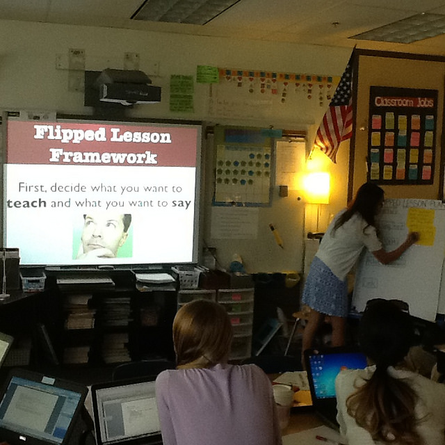
Qualitative and Quantitative Feedback
Effective teaching is so much more than tagged evidence. The ReVIEW Talent Feedback System encourages teachers and evaluators to use both qualitative and quantitative evidence aligned to indicators.
Curriculum, Instruction, and Assessment
Instructional capacity increases when teachers get actionable feedback based on best pedagogical practices. The ReVIEW Talent Feedback system coaches evaluators through the Claim, Connect, Action method to ensure teachers focus on meaningful student engagement and learning.
Supportive Yet Critical Feedback
When educators receive feedback for growth directly connected to your indicators instructional capacity grows. The ReVIEW Talent Feedback System puts the focus on coaching and development not tagging of evidence.
An Awareness of Bias
We all have different lenses. The ReVIEW Talent Feedback System helps evaluators recognize their bias and provide the most objective feedback possible.
Clear Communication
Our system trains teachers to write effective feedback reports that are evidence driven. Using the Claim, Connect, Action method evaluators learn to make claims based on a framework, connect that claim to observed evidence, and then recommend actionable feedback.
Contact Us
Want to Rethink Evaluation? Contact Us.
Intuitive Interface
Teachers Documenting Reflective Growth
Review Talent Feedback System is built for teachers. The user interface is fully responsive, clean, and simple.
Easy to Use Dashboard
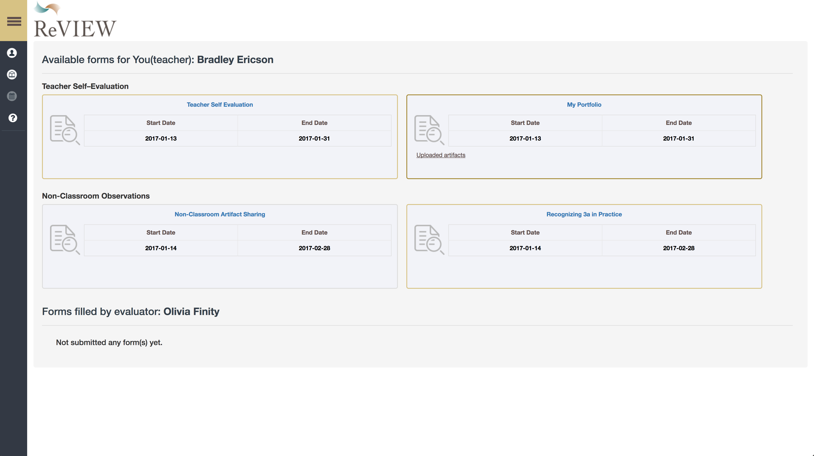
The dashboard displays events, forms, and observations. Teachers also have access to any documents or forms completed by a coach or an evaluator.
Self Evaluation
ReVIEW Talent Feedback System comes with tools to help teachers develop as reflective practioners.
Our system is pre-loaded with self-evaluation forms your district can use or customize.
Dynamic Goal Setting Features
Teachers can set and reflect on their progress towards meaningful learning goals.
Artifact Upload
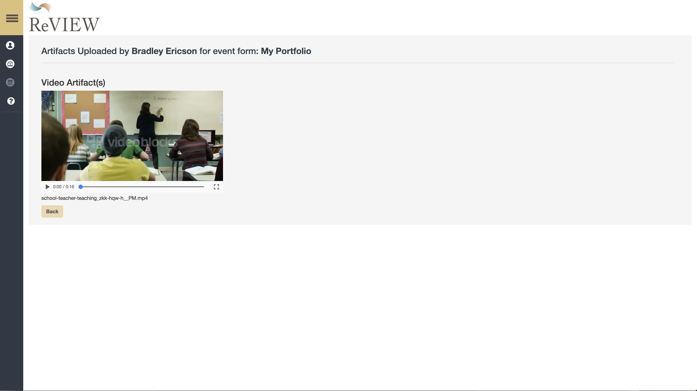
Throughout the year teachers can share reflections and artifacts, such as mini-clips of their practice, with their coaches and evaluators
Easy Use for Evaluators
Creating tools to Increase Capacity
Easy to Use Dashboard
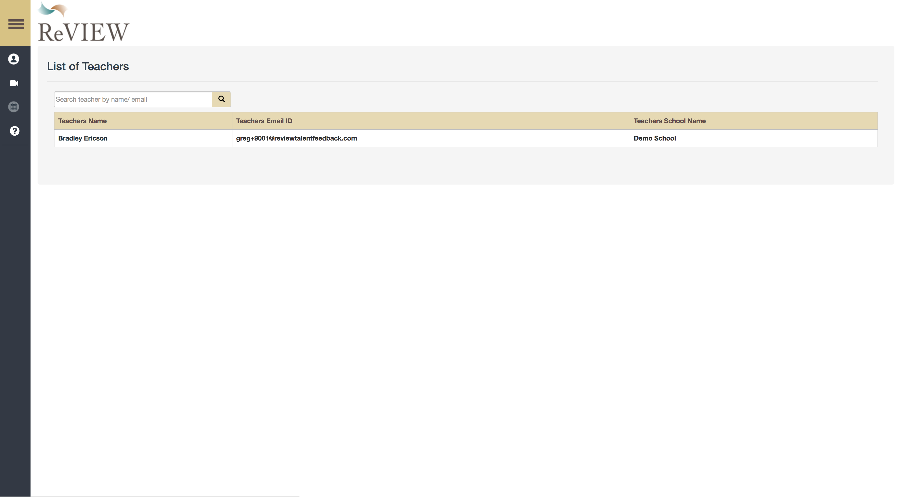
Evaluators get a list of all teachers in their case load. They can easily move between the forms they must compelte as part of your district's teacher evaluation plan.
Simple Teacher Profiles
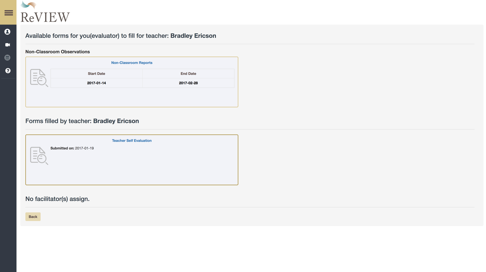
When evaluators visit a teacher profile in their case load they see a list of all forms submitted by the teacher as well as all forms they must compelte as an evaluaotr. All events are time stamped and displayed in a simple and clean interface.
Beautiful Frameworks
Our system is designed to maximize the efficacy and efficiency of evaluators. Using our forms you can score at the domain, indicator, or attribute level. Our responsive systems displays rubrics for evalautors that make navigation easy. The frameworks are fully collapsible tables which provide the information evaluators need exactly when they need it.
Most importantly ReVIEW Talent Feedback System coaches evaluators through our unique user interface to write actionable reports that can serve as learning tools. There is no tagging of evidence just quality written feedback.
Video Based Calibration
Ensuring the Capacity of Your Evaluators
Step One: Collecting Evidence
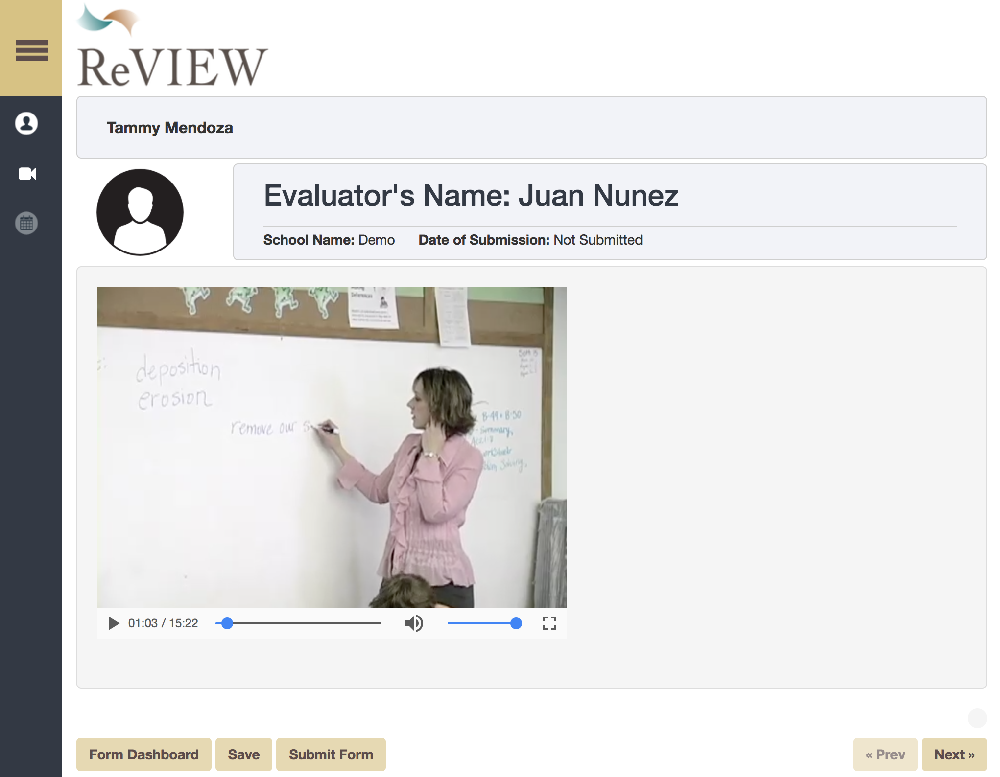
Evaluators in your district receive access to a video from our library. These videos have been normed against numerous frameworks across the country.
Step Two: Analyze the Evidence
Your district evaluators then score this video against your chosen framework.
Using the user friendly interface they can score at the indicator and domain level but also select a rating at the attribute level.
Step Three Coaches Provide Feedback
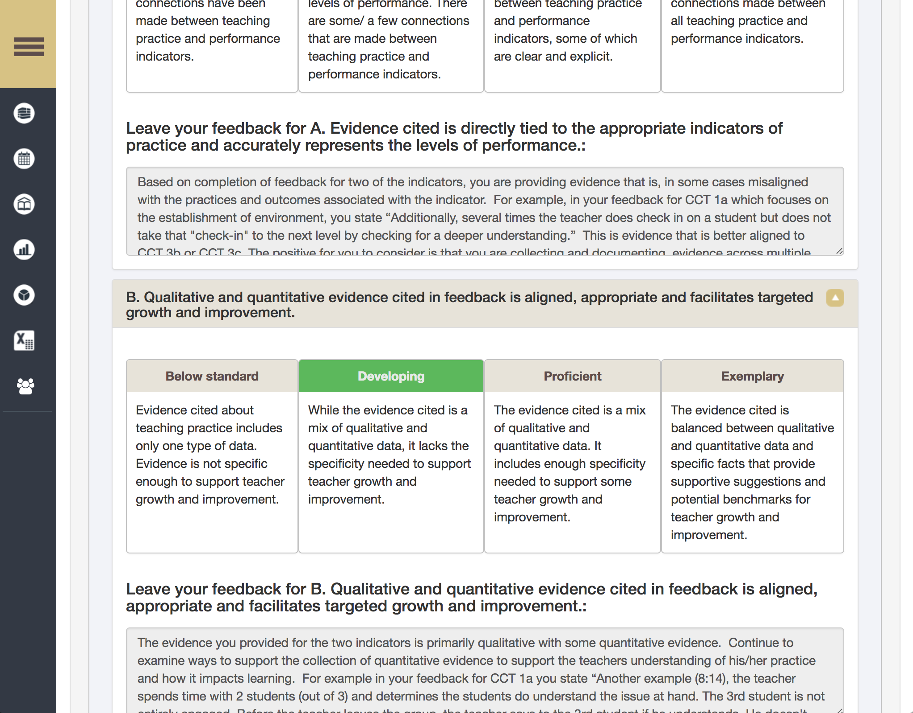
Then a coach from ReVIEW Talent Feedback System will score the evaluator’s submitted report. Our coaches provide your evaluators with a model of high quality written feedback teachers deserve.
Step Four: Create a Professional Development Plan
As a district leader you will have access to facilitator reports that give a snapshot at how well your evaluators support the instructional capacity of your teachers. You can also download all evaluator and facilitator reports and data.
Comprehensive Talent Platform
Providing Feedback to Improve Evaluations
ReVIEW Talent Management System provides school districts with the tools to make feedback the driver of capacity growth. We built the platform to make the act of reflective practice to seem natural and not an additonal requirement in an already busy day.
Multi-Layered Feedback
At ReVIEW we believe a noble path to improvement begins with feedback. This holds true from Central Office to our youngest students. The district administrator dashboard provides easy navigation to many tools. ReVIEW Talent Feedback System is organzed around schools (or any group of individuals such as departments). The District admin account has access to special features including:
Framework Management: Change the rubrics used to evaluate different positions in the district or Unversity.
Event Management: Use pre-built or customize your own forms and then schedule events such as observations, portfolio, or course completion.
School Management: Add schools, departmetns, and users. Access and download any form submitted by a user.
Group Management: Create groups of users such as first year employees, tenures, and non tenured. Then you can set different frequencies for observations based on these groups.
Export Form Fields: Download any response submitted to a form. You can select by school, user, form, and even by question.
Faciliatator Reports: If you want to provide feedback to observation reports or assessments written by department chairs or evaluators you can get a snapshot of how well your team delivers high quality feedback.
Report Management: Choose from over twenty different reports that you can access fromt the district to the individual user level.
Video Based Calibration: If you purchase access to our professional development library you can create inter-rater reliability tests. Furthermore you get access to the videos in yoru form builder allowing you to create video based professional development.
Help: Reach out to us.
Teacher and School Leader Evaluations
In ReVIEW Talent Feedback System users are organized by their roles and postions.
ReVIEW Talent Feedback System allows you to choose between Teacher, Facilitator, Evaluator, and School Admin. Each role increases in rights. Users can have multiple roles.
Teacher: Submits artifacts and can be evaluated. Does not evaluate anyone else.
Evaluator: Can evaluate a teacher.
Facilitator: Provides feedback to the evaluator
School Admin: Can access all completed forms in that school, can change evaluator and teacher assignments.
The system also comes pre-loaded with a library of normed videos that districts can use to provide professional developeent activitaties around calibration and inter-rater reliability. Evaluators complete the video based observation and then receive feedback from a district employee or a ReVIEW faciiitator.
Group Management
In ReVIEW Talent Feedback System the frequency of events and observations depends on group assignments. District Administrators can create unlimited groups and assign forms and frequencies based on group membership.
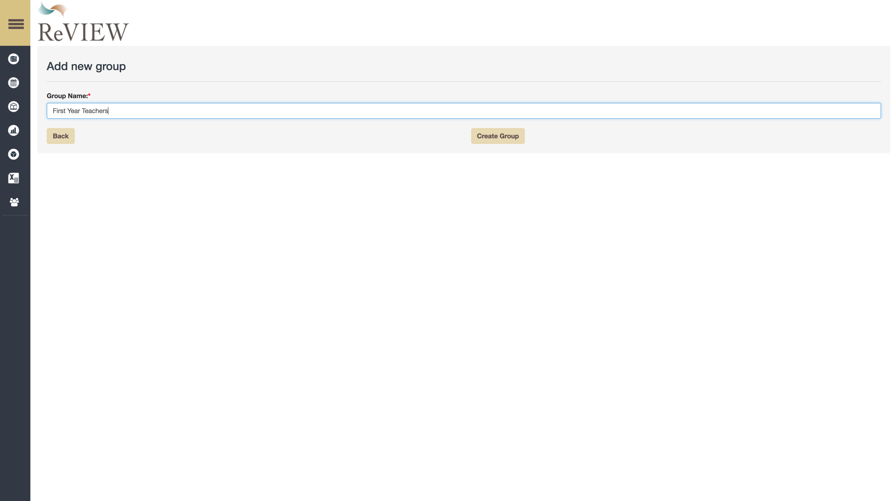
First you make a group. You can then assign a user to the group by access the school management window.
You can then select events for each group.
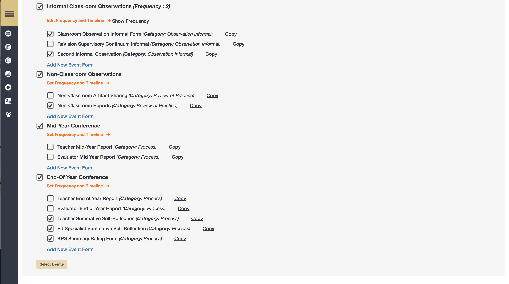
Flexible Forms
ReVIEW Talent Feedback System has a fully functional form builder you can utilize to in your organization. You can make goal setting forms, portfolios, surveys, even online classes for your users to complete.
Pre-Populated Forms
ReVIEW Talent Feedback System comes pre-populated with ove twenty forms. This includes goal setting mettings, self reflections, formal observations, mid year reports, and so much more. You can use these forms out of the box or edit the existing forms to suit your needs.The evnt names, such as teacher observations, service, or organization can be easily customized.
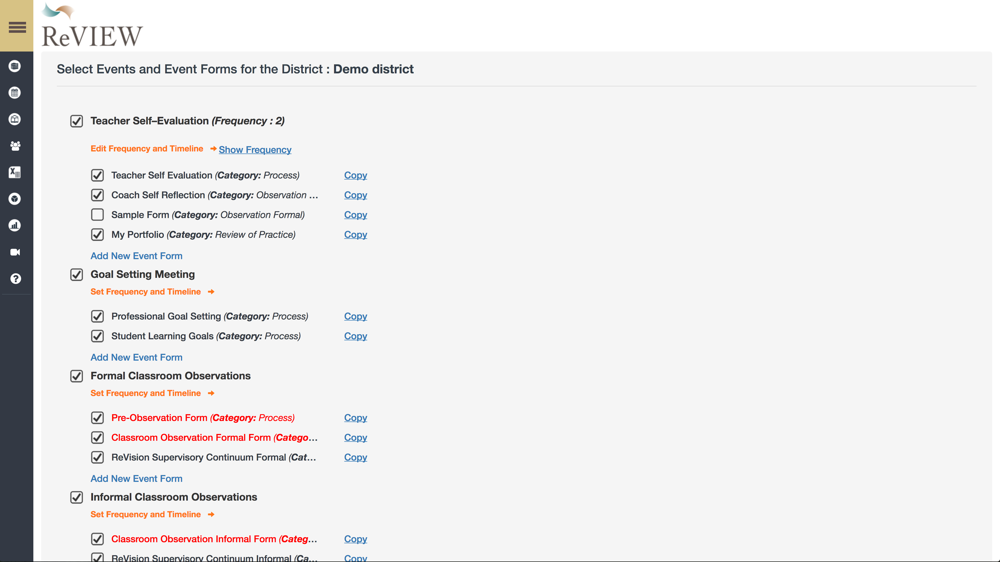
Making Forms
When creating a new form you get to choose its category. This is used to generate reports based on the responses captured in the database. You can also assign different forms based on the roles of the user.
Form Components
When building forms you can choose from over a dozen tyopes of components. This gives you the ability to design anything from an observation form to an online class.
Date of Observation: This field, when added, is mandatory by default, it will display the date of observation on the teacher and evaluator dashboard once a report is completed
Text This is a single line text box good for small text fields such as a name or school.
Text Area Users will get an expandable text box. This is good for long form paragraph entry.
Checkbox Here you can creat checkboxes where users can pick one or more choices.
Dropdown-Here you can create a menu of choices for your users where they select one. Click on the plus button to add options and then type in the response you want users to be able to select.
Scale Score: This will have teachers or evaluators choose a rating using your predetermined scale labels (0-4 for example),
Goal Setting: Users will have the ability to add goals and action steps to reach those goals.
Rubric-The rubric question allows you to choose one domain and indicator. If you have users utilizing different frameworks based on position you have to select a domain and indicator for each position.
Calendar- This allows a user to selecta data from a pop calendar. This is useful for setting meetings or noting when a task is completed. It does not get displayed on the dashboard like the date of observation component.
File Upload This allows users to share artifacts such as pictures and reflection. Video uploads are available for an additional charge to cover the cost of storage and bandwidth,
Overall Score What is a users overall score across all domains and indicators.
Label This is a read only component. You can include basic html. A great tool to help with navigation or when building online classes for professional development.
Domain Score The overall score on any given domain. If you have different frameworks for different positions you will have to select each domain.
TableBuild a table for your users to fill out. You select the number of columns and rows and then provide labels.
Flexible Frameworks
Build Rubrics For Learning
At ReVIEW Talent Feedback System we know no two organizations have the same evaluation plan. So we give you maximum flexibility when developing or using a framework of excellence with your team.
Choose your Scales
You first can choose your scale you will use as an organization. Our scales, ranging from 0-5, allow you to create holistic rubrics where you make an overall judgement to analytical rubrics where you score users on domains, scales, and attributes.
Flexible Frameworks
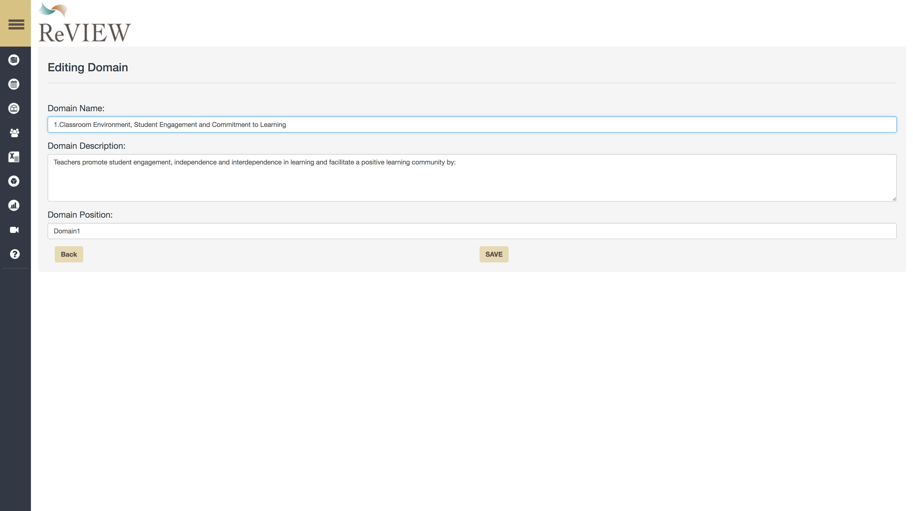
When editing a rubric you name your highest level domain, and assign a numerical value.
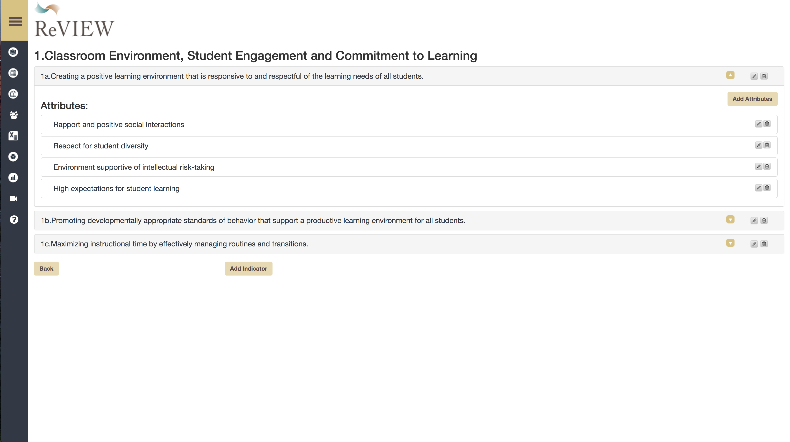
When editing a rubric you have the option of adding additional indicators and attributes as well.
The rubric creator built into ReVIEW Talent Feedback System even allows you to customize the descriptor language in at the attribute level. This allows you to build in key levers that signify growth in your users.
You can thenassign a different framework to positions in your organization. When you first deploy REVIEW Talent Feedback System you determine position names. Once you finish cutsomizing rubrics you can assign different frameworks to your users.
Effective Reports
Focus on Feedback
ReVIEW Talent Feedback System also has a robust report generation tool. Building and district leadership can use the data to drive systemic change.
The report management dashboard comes with over twenty options for reports. You have the ability to compare teacher, school, and distrcit averages. You can track the total number of oservations and forms complete.
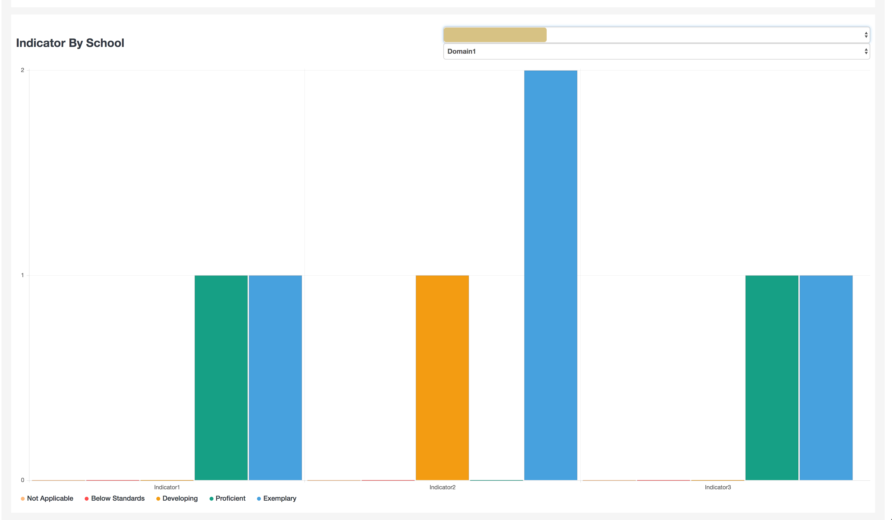
Once the report options are selected visually appealing graphs and tables display the data you need.
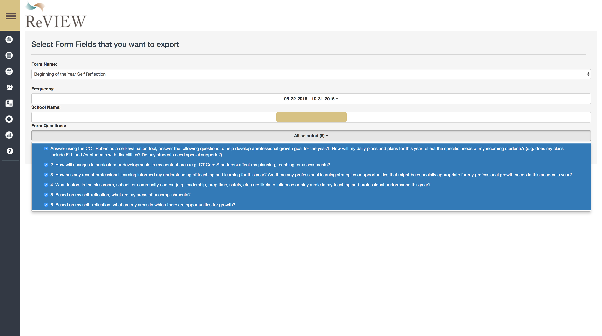
ReVIEW Talent Feedback System also allows you to download the responses to any form into a csv spreadsheet. You can select forms by school, form, and even question. These responses are great to use for staff training.
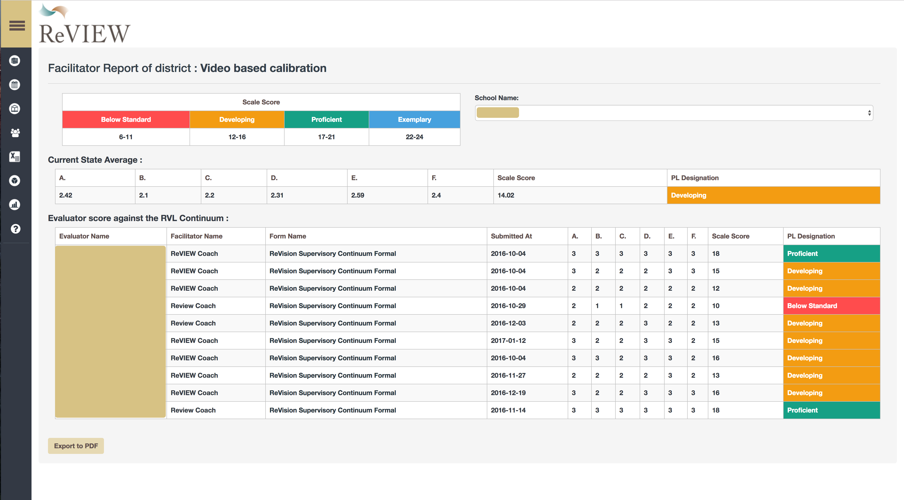
Facilitator reports are also available for organizations using the ReVision Learning Survisory Continuum. These provide a snapshot into the quality of your team and can be used to track progress as we focus on delivering feedback for growth.